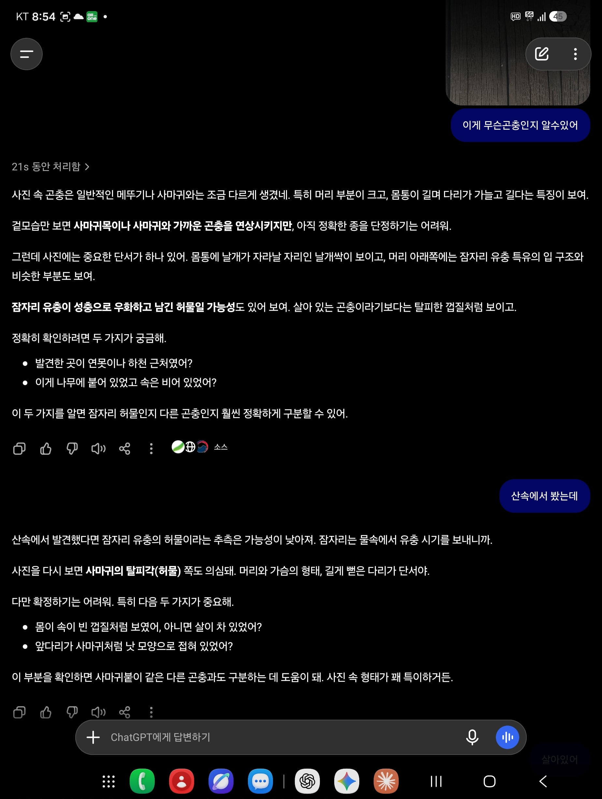
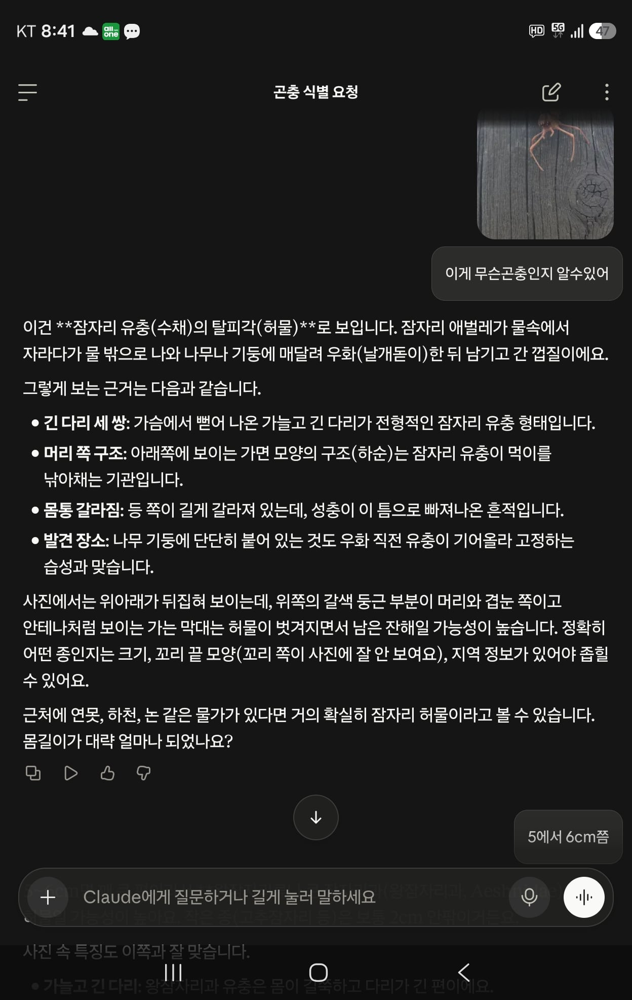
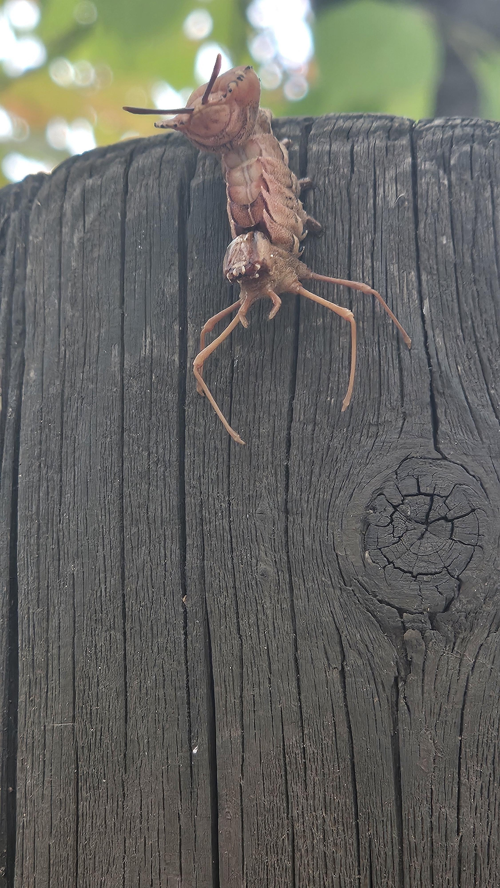
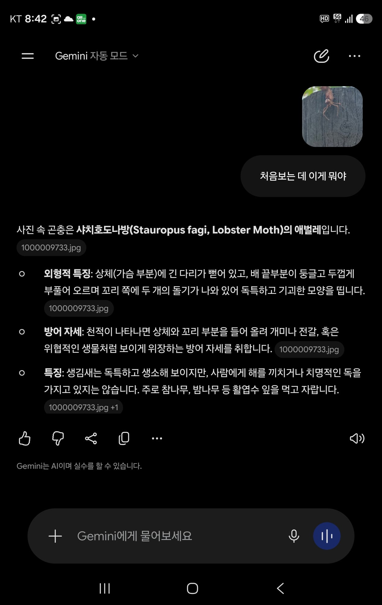
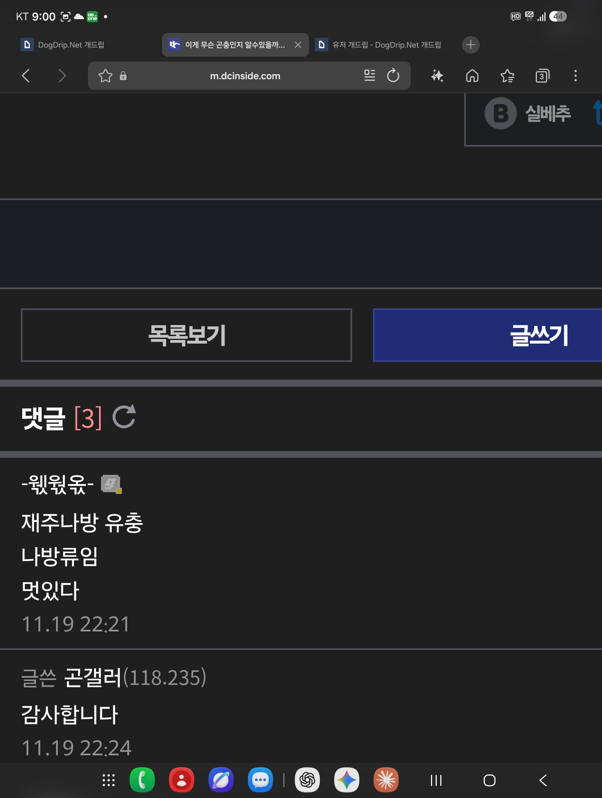

제미나이는 아무거나 대답하고 지피티 클로드는 뭔지 모르네
곤충갤 에서 금방나옴




제미나이는 아무거나 대답하고 지피티 클로드는 뭔지 모르네
곤충갤 에서 금방나옴
저게 디지몬이란거냐? 디지게 몬 생긴 벌레?
와 진짜 처음보는 형태다
오리너구리 처음 본 유럽인 기분임
귀엽당
곤충은 진짜 존나 기괴한것 같애.. 저그가 진짜 어딘가 있을것 같음.
지구 입장에서 곤충이 더 친숙하고 인간이 어색한것
으악 저그다
집에있으면 기절할듯
오? ㄹㅇ 신기하게 생겼네
AI보다 곤충갤 검색력이 더 무섭다
검색도 아닐거 같은데 ㅋㅋㅋ
"뇌 내 검색"
바이오 지피티
페이스허거잖아
생긴것만보면 못깝치겠네 자연은 신기해
잼민이 한국명은 개같이 말해도 학명은 제대로 말했네 ㅋㅋ
에일리언인데
곤충갤엔 척척석사들도 있겠지..?
평범한 새끼 뮤라리잖아
좀 크면 날개나옴
아직은 인류에게 남은 시간이 있다
어째 보면 재미나이가 더 근접 했네
디파일러아님?
나 저거 바이오하자드4에서 봤음
역시나 제미나이 ㅋㅋ 클로드한테 검색하니 바로 맞추네 유충부터 성체까지 정리해서 알려주네
제미니가 맞게말한거같은디?
샤치호코 나방이라는데 그게 제주머시기나방이래
검색해서보니깐 진짜 끔찍하게 생겼는데 ㄹㅇ 신기하네
이번에 나온 제미나이 네온한테 물어보니깐 맞추는데?
나름 별 곤충 다 아는데 이건 첨보네
클로드한테 물어보니까 제주나방 바로 맞춤
그리고 이 글 캡쳐본 보여주니까 (링크주니까 크롤링 못한다캐서 캡쳐해다 줌) 제미나이가 말한 학명이 한국명으로 제주나방이라 제미나이만 맞고 작성자도 틀렸다 캄 ㅋㅋㅋㅋㅋㅋㅋ
클로드도 물어봤는데 잠자리 허물이라고 하던데
잼민이도 살짝 틀린 게 샤치호'코'나방인데 샤치호'도'나방이라 그래써. 저 새끼 지금 천안가서 호도과자 줄서고 있나봐
제주가 아니가 재주 나방이네
예전에 나도 곤충 스치듯이 본 거 궁금해서 얼른 메모장에 그려다 곤충갤에 올렸는데 그림 잘 그린다고 칭찬 받아서 뿌듯했었음
애벌레들 평범한 생존전략임
개미 뱀머리 새똥 등등 종마다 의태한거 많음
또 무료버전이야?
유료좀 써라 거지새끼도아니고
곤충갤 같은데는 진짜 곤충 생물학자 같은 사람들이 항시 상주중 아닐까
그 러브x섹스x로봇 에 나온 우주 정거장 표류 벌레 생각나네
그냥 구글 렌즈 돌려도 나오는데
이미 정보 퍼져서 그런 건가?
그러게 나도 사진찍은거에서 점3개눌러서 바로 구글렌즈 돌리면 걍 거의다 맞추던데
구글렌즈는 검색결과기반이라 그런가
저게 멋있냐... 으 징그러
뭐 이렇게 생겼냐
재주나방애벌레 임
랍스터나방 맞네 제미나이가 맞췄네
군대에서 본거같기도하고
ㅈㄴ 신기하게생겨서 잡은애한테 뭐냐고 물어보니 자기도몰라서 그냥 저그라고 부르던데
디파일러같다
저그는 실존한다
와 개무섭게 생겼네
부리부리대마왕 아님?